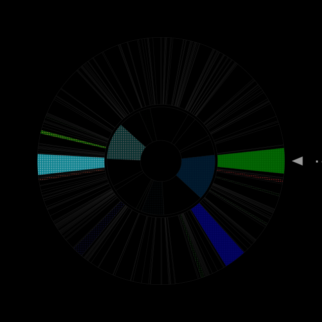
student
calibration: over · 15 rows
R 11% G 44% B 44%
grainy red 100% · dimmed 0%
clusters 2 · spread 0.58 · lum 0.027
claim gap +0.53 · typical level 0.15
top arcs s.learning 60%, s.self_care 36%
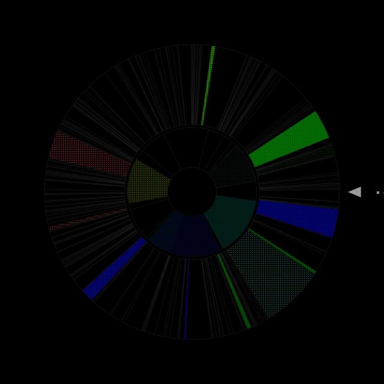
student
calibration: over · 15 rows
R 14% G 43% B 43%
grainy red 100% · dimmed 0%
clusters 1 · spread 0.67 · lum 0.021
claim gap +0.90 · typical level 0.24
top arcs s.self_care 58%, s.home 23%
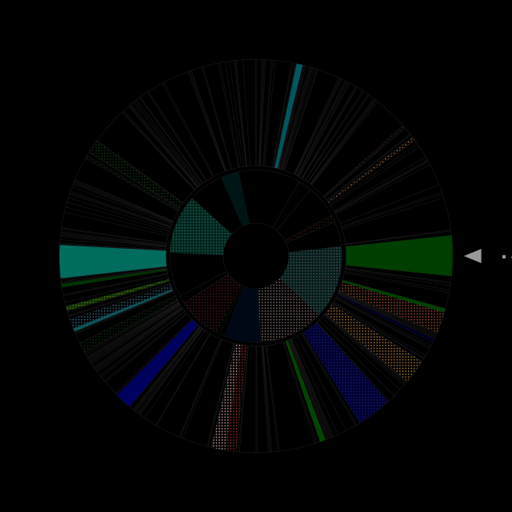
student
calibration: well · 22 rows
R 18% G 43% B 40%
grainy red 100% · dimmed 0%
clusters 2 · spread 0.70 · lum 0.031
claim gap +0.80 · typical level 0.20
top arcs s.learning 40%, s.self_care 33%
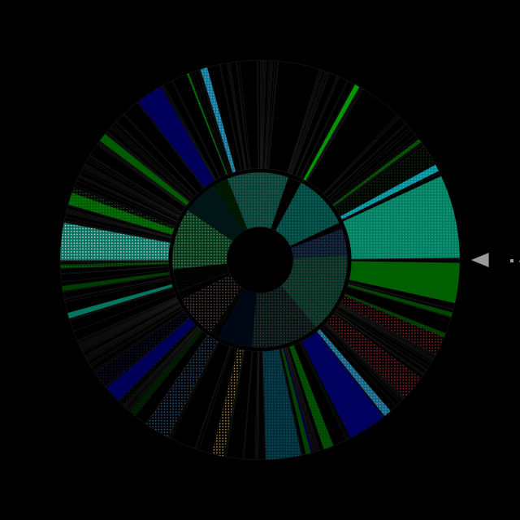
student
calibration: over · 38 rows
R 9% G 49% B 42%
grainy red 100% · dimmed 0%
clusters 2 · spread 0.80 · lum 0.090
claim gap +0.70 · typical level 0.29
top arcs s.home 33%, s.learning 20%
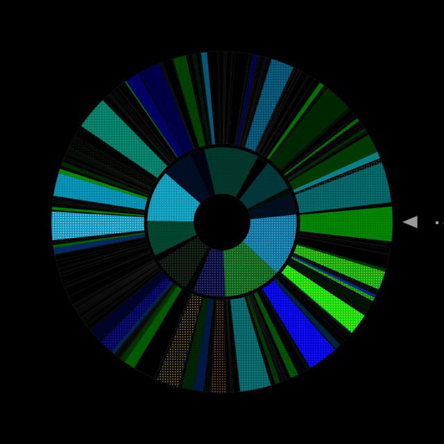
student
calibration: over · 64 rows
R 6% G 51% B 43%
grainy red 100% · dimmed 0%
clusters 2 · spread 0.86 · lum 0.153
claim gap +0.47 · typical level 0.37
top arcs s.self_care 25%, s.home 19%
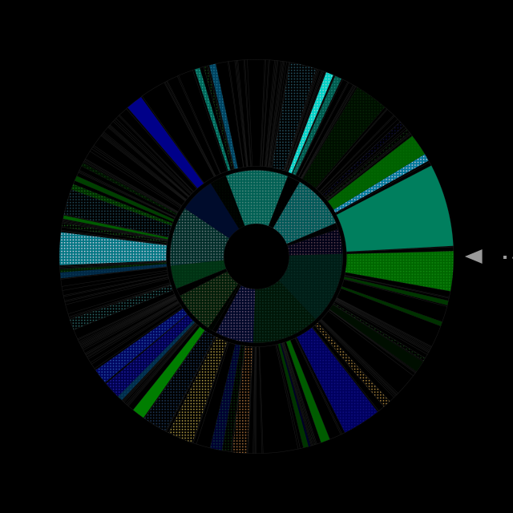
shift_worker
calibration: over · 53 rows
R 8% G 50% B 43%
grainy red 100% · dimmed 0%
clusters 2 · spread 0.83 · lum 0.101
claim gap +0.66 · typical level 0.19
top arcs s.home 28%, s.learning 18%
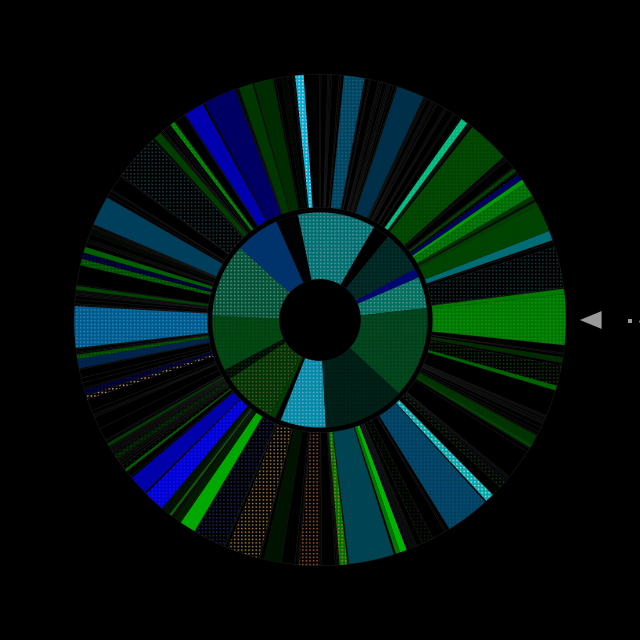
shift_worker
calibration: well · 63 rows
R 4% G 49% B 46%
grainy red 100% · dimmed 0%
clusters 4 · spread 0.87 · lum 0.118
claim gap +0.67 · typical level 0.34
top arcs s.mobility 19%, s.leisure 16%
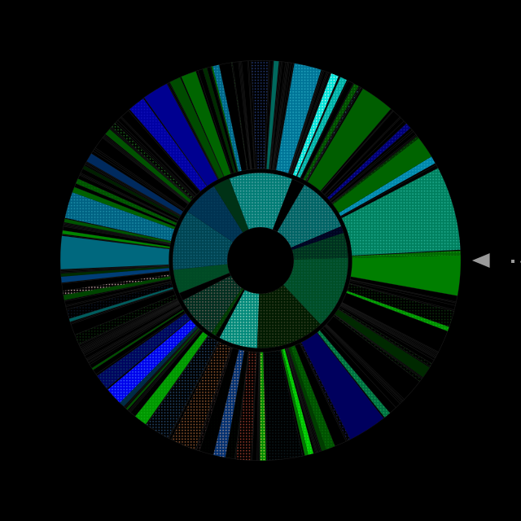
shift_worker
calibration: over · 92 rows
R 4% G 52% B 45%
grainy red 100% · dimmed 0%
clusters 2 · spread 0.88 · lum 0.155
claim gap +0.68 · typical level 0.37
top arcs s.home 20%, s.learning 14%
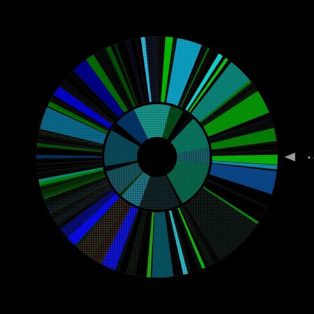
shift_worker
calibration: over · 149 rows
R 3% G 50% B 47%
grainy red 100% · dimmed 0%
clusters 4 · spread 0.89 · lum 0.161
claim gap +0.68 · typical level 0.24
top arcs s.mobility 18%, s.leisure 16%

shift_worker
calibration: well · 215 rows
R 3% G 52% B 44%
grainy red 100% · dimmed 0%
clusters 2 · spread 0.91 · lum 0.192
claim gap +0.23 · typical level 0.28
top arcs s.self_care 22%, s.home 16%

carer
calibration: under · 56 rows
R 5% G 53% B 42%
grainy red 100% · dimmed 0%
clusters 2 · spread 0.81 · lum 0.099
claim gap +0.62 · typical level 0.20
top arcs s.home 30%, s.self_care 20%
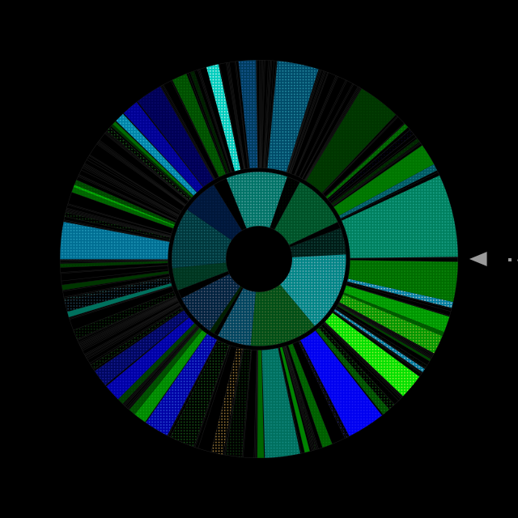
carer
calibration: under · 120 rows
R 4% G 52% B 45%
grainy red 100% · dimmed 0%
clusters 2 · spread 0.90 · lum 0.178
claim gap +0.23 · typical level 0.35
top arcs s.self_care 26%, s.home 17%

carer
calibration: over · 90 rows
R 5% G 49% B 46%
grainy red 100% · dimmed 0%
clusters 5 · spread 0.88 · lum 0.132
claim gap +0.67 · typical level 0.29
top arcs s.self_care 23%, s.learning 15%
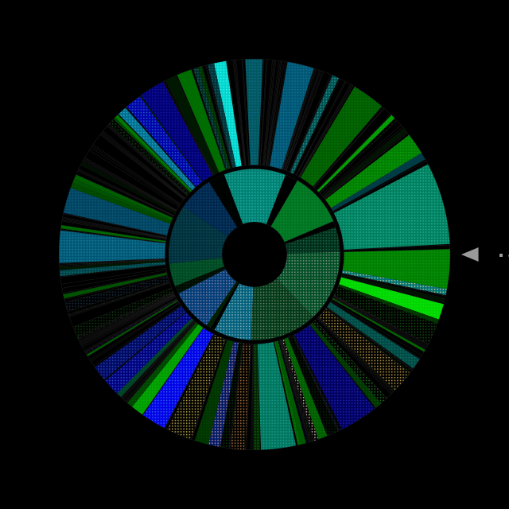
carer
calibration: over · 174 rows
R 4% G 53% B 43%
grainy red 100% · dimmed 0%
clusters 2 · spread 0.90 · lum 0.178
claim gap +0.91 · typical level 0.35
top arcs s.self_care 17%, s.home 17%
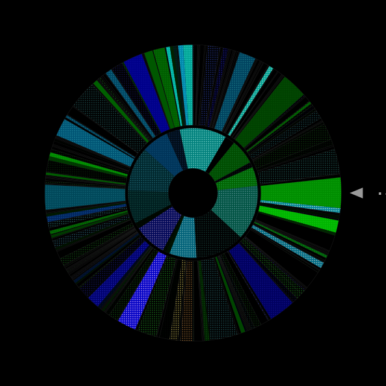
carer
calibration: under · 187 rows
R 4% G 50% B 46%
grainy red 100% · dimmed 0%
clusters 4 · spread 0.87 · lum 0.119
claim gap +0.66 · typical level 0.00
top arcs s.self_care 25%, s.work 21%
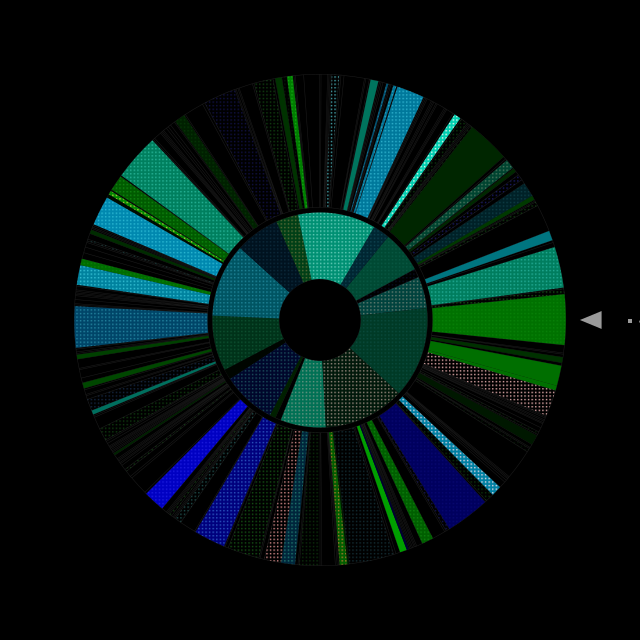
small_business_owner
calibration: well · 76 rows
R 4% G 51% B 45%
grainy red 100% · dimmed 0%
clusters 2 · spread 0.85 · lum 0.132
claim gap +0.57 · typical level 0.22
top arcs s.home 23%, s.self_care 17%

small_business_owner
calibration: over · 100 rows
R 4% G 53% B 43%
grainy red 100% · dimmed 0%
clusters 3 · spread 0.89 · lum 0.145
claim gap +0.78 · typical level 0.33
top arcs s.work 22%, s.mobility 18%

small_business_owner
calibration: over · 142 rows
R 5% G 54% B 42%
grainy red 100% · dimmed 0%
clusters 1 · spread 0.90 · lum 0.178
claim gap +0.46 · typical level 0.35
top arcs s.self_care 25%, s.home 17%
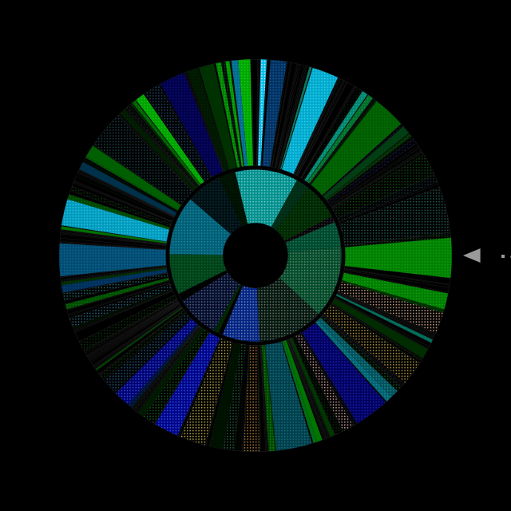
small_business_owner
calibration: well · 169 rows
R 6% G 52% B 42%
grainy red 100% · dimmed 0%
clusters 3 · spread 0.90 · lum 0.149
claim gap +0.87 · typical level 0.14
top arcs s.work 27%, s.self_care 18%
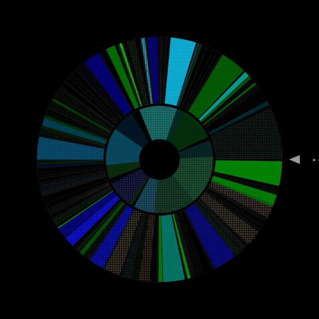
small_business_owner
calibration: under · 164 rows
R 6% G 48% B 46%
grainy red 100% · dimmed 0%
clusters 3 · spread 0.88 · lum 0.118
claim gap +0.85 · typical level 0.00
top arcs s.work 22%, s.self_care 21%
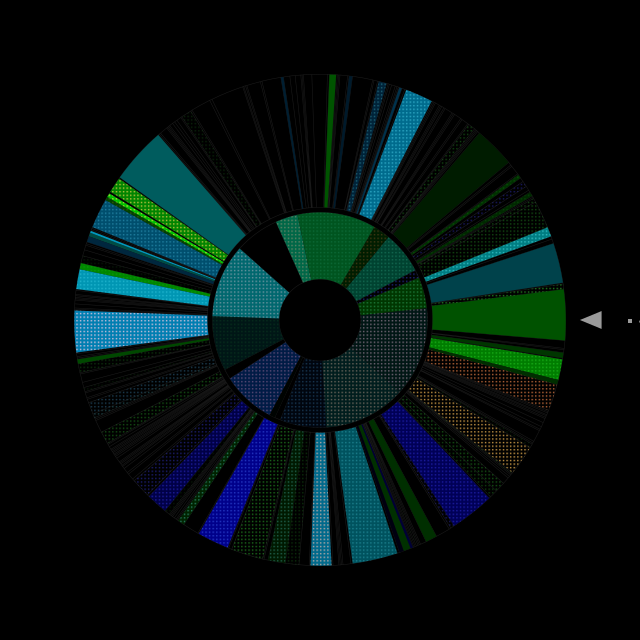
researcher
calibration: well · 54 rows
R 6% G 48% B 45%
grainy red 100% · dimmed 0%
clusters 3 · spread 0.86 · lum 0.118
claim gap +0.63 · typical level 0.20
top arcs s.learning 25%, s.home 20%
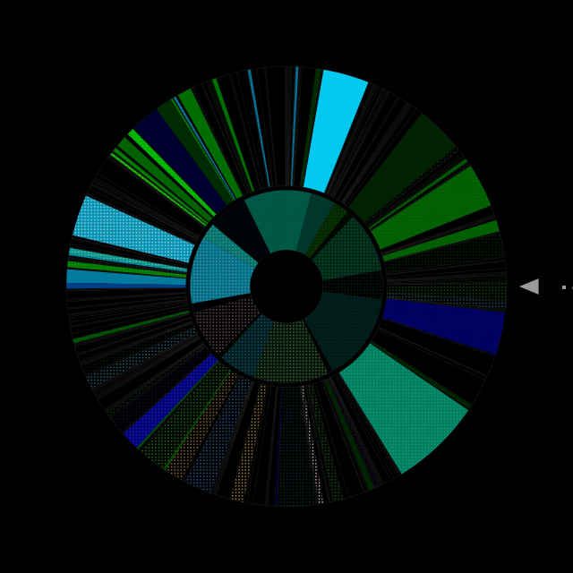
researcher
calibration: under · 78 rows
R 4% G 52% B 44%
grainy red 100% · dimmed 0%
clusters 3 · spread 0.84 · lum 0.122
claim gap +0.46 · typical level 0.19
top arcs s.learning 26%, s.work 24%

researcher
calibration: over · 129 rows
R 4% G 52% B 44%
grainy red 100% · dimmed 0%
clusters 2 · spread 0.89 · lum 0.164
claim gap +0.62 · typical level 0.35
top arcs s.learning 22%, s.home 18%
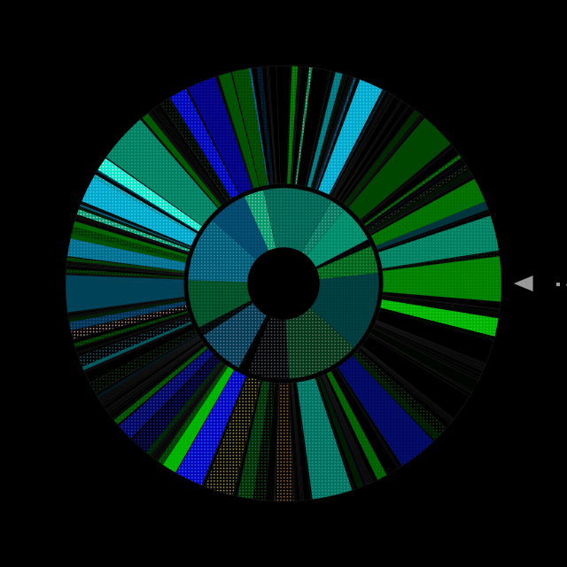
researcher
calibration: well · 189 rows
R 3% G 53% B 44%
grainy red 100% · dimmed 0%
clusters 2 · spread 0.89 · lum 0.174
claim gap +0.62 · typical level 0.32
top arcs s.learning 18%, s.home 17%
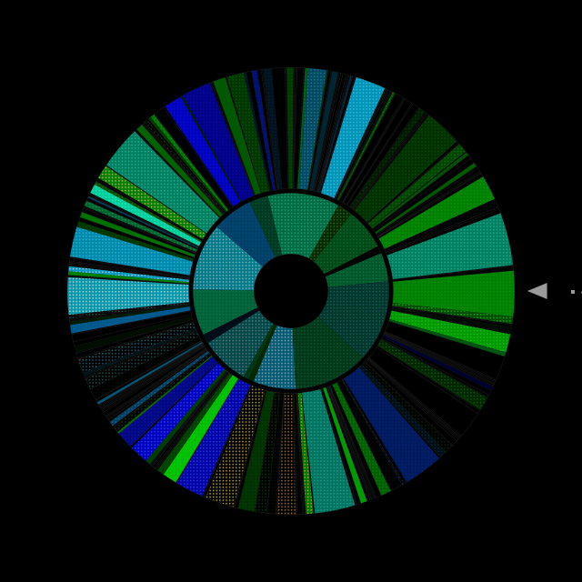
researcher
calibration: under · 221 rows
R 3% G 53% B 44%
grainy red 100% · dimmed 0%
clusters 2 · spread 0.90 · lum 0.183
claim gap +0.48 · typical level 0.28
top arcs s.learning 20%, s.home 16%
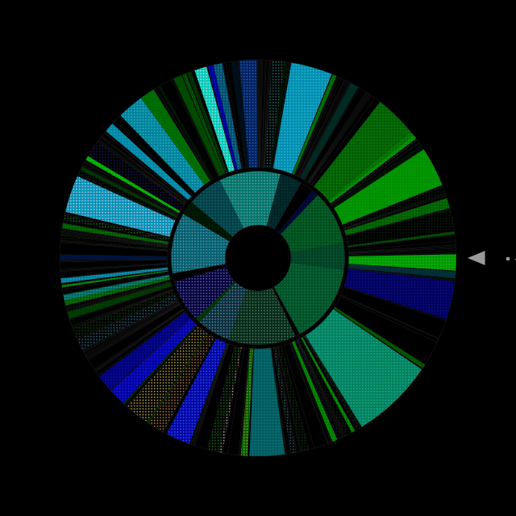
retiree
calibration: over · 175 rows
R 4% G 51% B 44%
grainy red 100% · dimmed 0%
clusters 2 · spread 0.89 · lum 0.176
claim gap +0.57 · typical level 0.24
top arcs s.home 17%, s.work 15%
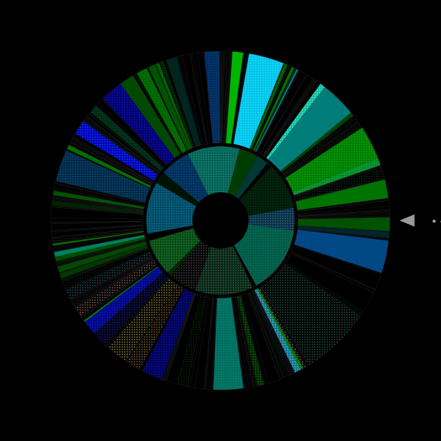
retiree
calibration: under · 160 rows
R 4% G 51% B 45%
grainy red 100% · dimmed 0%
clusters 3 · spread 0.89 · lum 0.147
claim gap +0.62 · typical level 0.28
top arcs s.work 20%, s.mobility 18%

retiree
calibration: well · 246 rows
R 5% G 50% B 45%
grainy red 100% · dimmed 0%
clusters 1 · spread 0.91 · lum 0.167
claim gap +0.64 · typical level 0.14
top arcs s.home 18%, s.self_care 16%
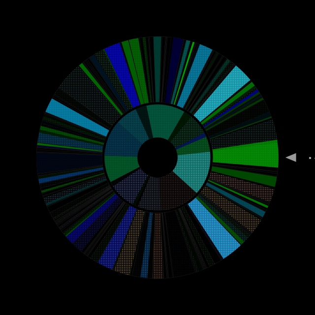
retiree
calibration: under · 158 rows
R 8% G 47% B 45%
grainy red 100% · dimmed 0%
clusters 2 · spread 0.87 · lum 0.117
claim gap +0.60 · typical level 0.06
top arcs s.mobility 21%, s.self_care 19%

retiree
calibration: under · 196 rows
R 6% G 52% B 42%
grainy red 100% · dimmed 0%
clusters 3 · spread 0.88 · lum 0.138
claim gap +0.75 · typical level 0.05
top arcs s.self_care 19%, s.work 18%

career_changer
calibration: well · 44 rows
R 5% G 47% B 48%
grainy red 100% · dimmed 0%
clusters 3 · spread 0.84 · lum 0.116
claim gap +0.85 · typical level 0.24
top arcs s.self_care 19%, s.work 19%
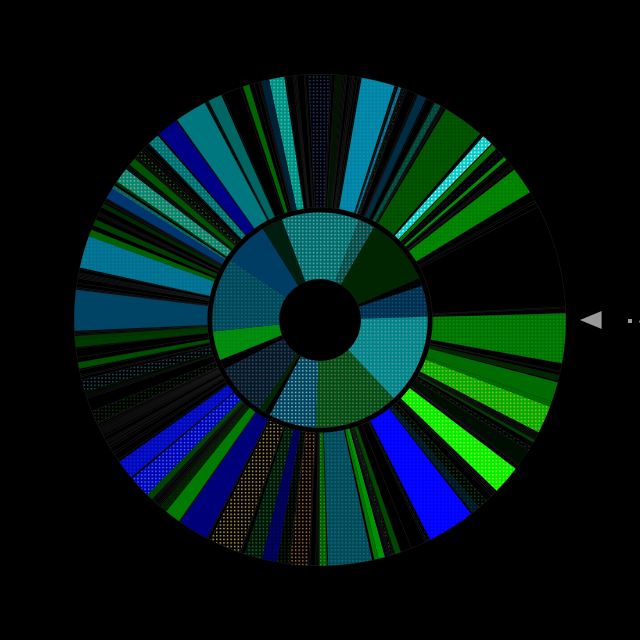
career_changer
calibration: over · 80 rows
R 5% G 51% B 44%
grainy red 100% · dimmed 0%
clusters 3 · spread 0.88 · lum 0.167
claim gap +0.45 · typical level 0.38
top arcs s.self_care 26%, s.work 16%

career_changer
calibration: well · 115 rows
R 3% G 48% B 49%
grainy red 100% · dimmed 0%
clusters 4 · spread 0.87 · lum 0.137
claim gap +0.43 · typical level 0.22
top arcs s.learning 19%, s.work 19%

career_changer
calibration: under · 140 rows
R 4% G 50% B 46%
grainy red 100% · dimmed 0%
clusters 1 · spread 0.90 · lum 0.189
claim gap +0.49 · typical level 0.31
top arcs s.learning 16%, s.leisure 15%

career_changer
calibration: well · 158 rows
R 4% G 52% B 44%
grainy red 100% · dimmed 0%
clusters 2 · spread 0.88 · lum 0.168
claim gap +0.55 · typical level 0.09
top arcs s.home 17%, s.learning 17%
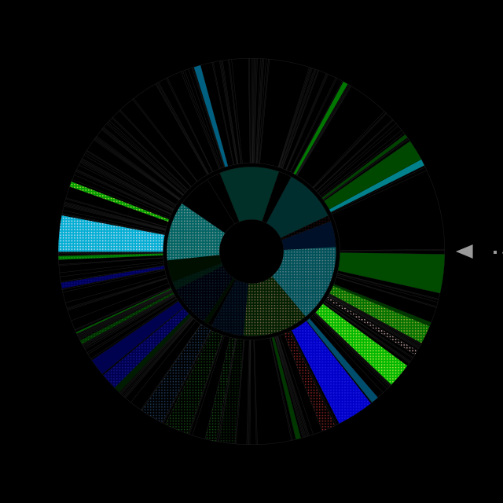
generalist
calibration: over · 34 rows
R 9% G 47% B 44%
grainy red 100% · dimmed 0%
clusters 2 · spread 0.75 · lum 0.079
claim gap +0.39 · typical level 0.30
top arcs s.self_care 39%, s.learning 33%
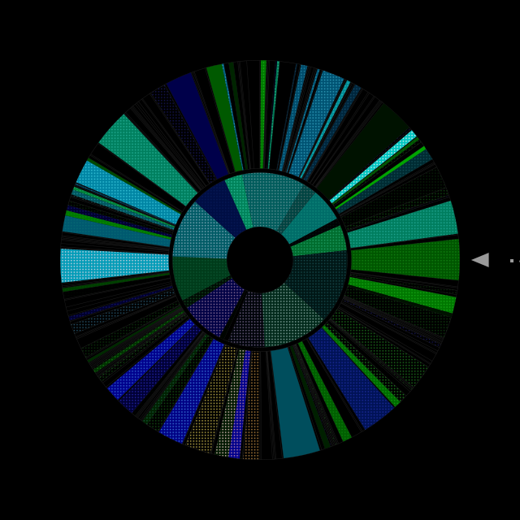
generalist
calibration: over · 100 rows
R 6% G 48% B 46%
grainy red 100% · dimmed 0%
clusters 4 · spread 0.87 · lum 0.138
claim gap +0.62 · typical level 0.19
top arcs s.home 22%, s.learning 19%

generalist
calibration: well · 150 rows
R 4% G 50% B 46%
grainy red 100% · dimmed 0%
clusters 2 · spread 0.88 · lum 0.151
claim gap +0.38 · typical level 0.21
top arcs s.home 20%, s.self_care 15%
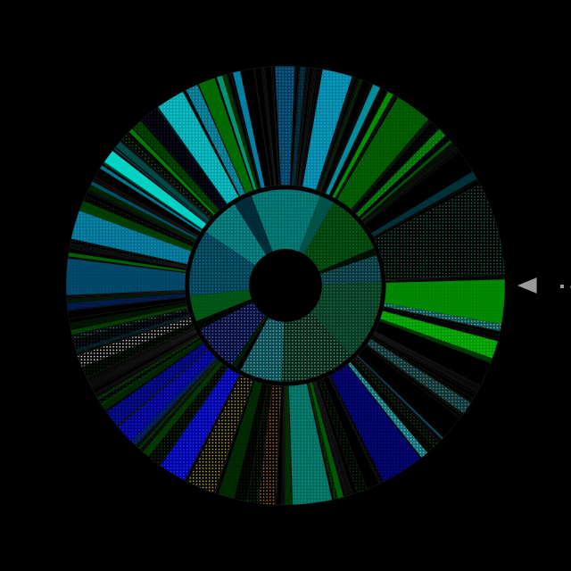
generalist
calibration: well · 157 rows
R 4% G 51% B 45%
grainy red 100% · dimmed 0%
clusters 3 · spread 0.89 · lum 0.153
claim gap +0.80 · typical level 0.19
top arcs s.work 17%, s.self_care 16%
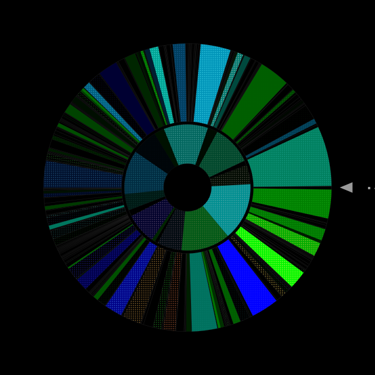
generalist
calibration: well · 192 rows
R 5% G 53% B 43%
grainy red 100% · dimmed 0%
clusters 1 · spread 0.88 · lum 0.160
claim gap +0.41 · typical level 0.11
top arcs s.self_care 27%, s.home 18%